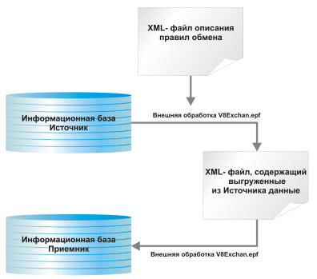

Существуют различные подходы к организации обмена данными между различными информационными базами. Один из таких подходов - организация обмена данными при помощи правил обмена. Для организации обмена данными достаточно разработать правила по которым необходимо переносить данные из одной информационной базы в другую. Когда правила обмена готовы, с их помощью из информационной базы источника можно выгрузить необходимую информацию в файл обмена из которого в свою очередь эти данные можно загрузить в информационную базу приемник.

На схеме видно, что при помощи внешней обработки и правил обмена данными из информационной базы-источника выгружается файл с данными. Этот файл с данными поступает на вход внешней обработке и в информационную базу-приемник загружаются необходимые данные.
Таким образом, обмен данными можно разделить на две стадии – стадию подготовки правил обмена и стадию обмена данными. Самый сложным и ответственным этапа безусловно является подготовка правил обмена. Данная программа как раз и пердназначена для разработки правил обмена данными.
Правила обмена представляют собой задание определенного соотвествия между объектами источника и объектами приемника. Но для того, чтобы задать это соответствие нам необходимо знать информацию о структуре метаданных двух информационных баз, участвующих в обмене данными. Зная структуру метаданных мы сможем задать и соотвествие типов объектов.
Следующий раздел: «Выгрузка и загрузка информации о структуре информационной базы»